第六章 修饰肽的合成
Synthesis of Modified Peptides
《Fmoc Solid Phase Peptide Synthesis: A Practical Approach》
W. C. Chan & Peter D. White (Eds.) | 书页 137–182
本章概述
本章系统讨论了在 Fmoc 固相多肽合成（SPPS）框架下，如何对肽链进行各种化学修饰，以获得非天然结构的肽类分子。内容涵盖三大类修饰策略：
C端修饰（C-terminal modifications）：包括肽N-烷基酰胺、肽羟肟酸（peptidyl hydroxamic acids）、肽醛（peptide aldehydes）、肽酰肼（peptidyl hydrazides）等的合成方法。
N端修饰（N-terminal modifications）：包括生物素化（biotinylation）、还原烷基化（reductive alkylation）等。
侧链修饰（Side-chain modifications）：利用正交保护基（orthogonal protecting groups）策略实现 Lys、Cys、Asp/Glu 等残基的选择性修饰，用于构建环肽、分支肽等。
这些修饰对于肽类药物开发至关重要——许多天然活性肽和药物分子都含有修饰基团（如C端酰胺化的激素、含羟肟酸的金属蛋白酶抑制剂、含醛基的蛋白酶抑制剂等）。掌握这些固相合成策略，是现代多肽药物化学家的必备技能。
1. C端修饰（C-Terminal Modifications）（页137–168）
C端是肽链的重要修饰位点。天然肽的C端通常为游离羧基，但在生物活性肽中，C端酰胺化（–CONH₂）极为常见。此外，C端还可以修饰为酯、羟肟酸、醛、酰肼等多种官能团，赋予肽分子不同的化学和生物学性质。本章按照修饰类型逐一讨论。
1.1 肽N-烷基酰胺（Peptidyl N-alkyl Amides）（页137–145）
1.1.1 背景与重要性
肽酰胺（peptide amide, –CONH₂）是自然界中最常见的C端修饰之一。许多重要激素都是C端酰胺化的，例如：
催产素（oxytocin）——子宫收缩和泌乳
胰泌素（secretin）——调节胰腺外分泌
促性腺激素释放激素（LHRH/GnRH）——调控生殖
C端酰胺化使肽分子对羧肽酶（carboxypeptidases）的降解产生抗性，从而显著提高体内稳定性。进一步将酰胺氮上的氢替换为烷基（即N-烷基酰胺, –CONHR），可以获得更强的酶解抗性和改变的药代动力学性质。
1.1.2 合成策略
肽N-烷基酰胺的固相合成主要有两种策略（见 Figure 1）：
策略一：氨解/胺解树脂结合酯（Ammonolysis/Aminolysis of resin-bound esters, Figure 1a）。将肽链通过酯键连接到树脂上，合成完成后直接用胺类试剂（如氨气、伯胺）对酯键进行氨解或胺解，切割同时生成肽酰胺或肽N-烷基酰胺。这种方法一步完成切割和C端修饰，简洁高效。
策略二：使用树脂结合胺（resin-bound amine, Figure 1b）。首先在树脂上构建含有氮原子的连接臂（linker），肽链合成完成后，通过化学修饰（如还原N-烷基化）将连接臂上的氮转化为仲胺（secondary amine），再经切割释放出N-烷基酰胺产物。这种方法的优势在于可以在固相上进行N-烷基化的多样化修饰。
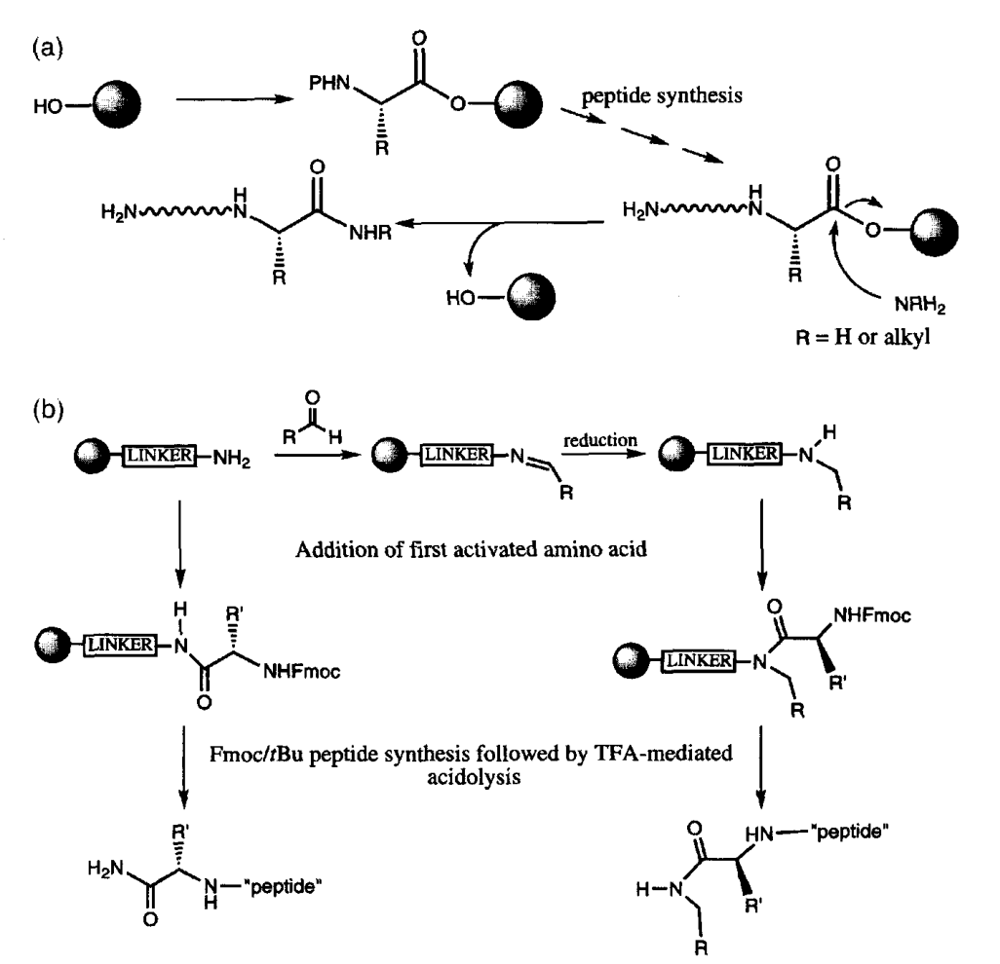
Figure 1. (a) 树脂结合酯的氨解/胺解；(b) 肽酰胺和肽N-烷基酰胺的合成策略
1.1.3 Sieber酰胺树脂
Sieber 酰胺树脂是一种酸敏性酰胺树脂，其最大特点是仅需 1% TFA（三氟乙酸）即可实现切割，条件极其温和。这一特性使得在切割过程中肽链的侧链保护基得以完整保留，从而可以获得 side-chain protected peptide amide，适用于片段缩合（fragment condensation）策略。
更重要的是，Sieber 酰胺树脂可以通过还原N-烷基化（reductive N-alkylation）反应，将树脂结合的伯胺转化为仲胺连接臂。具体操作为：在树脂上先进行烷基化反应（使用醛/酮 + NaBH₃CN 或 NaBH(OAc)₃），得到N-烷基化的 Sieber 树脂，然后按常规 Fmoc SPPS 流程合成肽链。最终用 1% TFA 切割，获得肽N-烷基酰胺。
1.1.4 Rink酰胺树脂的N-烷基化
Rink 酰胺树脂是 Fmoc SPPS 中最常用的酰胺树脂，但通常产生C端伯酰胺（–CONH₂）。要获得N-烷基酰胺，可以对 Rink 树脂进行类似的还原N-烷基化修饰。Rink 树脂的游离胺与醛缩合形成亚胺（imine），再用还原剂（如 NaBH₃CN）还原为仲胺，随后进行肽链合成和 TFA 切割。
Protocol 1: N-烷基化 Sieber 树脂的合成和使用
1. 将 Sieber 酰胺树脂用 DCM 溶胀（10 min）。
2. 加入醛（5 eq.）和 NaBH(OAc)₃（5 eq.）的 DMF/DCM 溶液。
3. 室温振摇反应 2–18 h（-monitoring by Kaiser test 或 UV 检测）。
4. 用 DMF (×3)、DCM (×3)、MeOH (×2) 充分洗涤树脂。
5. 用 20% piperidine/DMF 脱除 Fmoc 保护基（如需要）。
6. 按标准 Fmoc SPPS 流程合成肽链。
7. 用 1% TFA/DCM 切割（多次少量，每次 5–10 min），收集滤液。
8. 浓缩并沉淀纯化产物。
Protocol 2: Rink 酰胺树脂的N-烷基化
1. 将 Rink 酰胺树脂用 DMF 溶胀。
2. 加入醛（10 eq.）和 NaBH₃CN（10 eq.）的 MeOH/AcOH 缓冲液。
3. 室温反应 2–4 h。
4. 洗涤树脂（DMF ×3, MeOH ×2, DCM ×3）。
5. 重复步骤 2–4 可获得双烷基化产物（如需要）。
6. 后续按常规 SPPS 合成肽链，用 95% TFA 切割。
1.2 HMBA 连接臂与 C 端多样化（页145–148）
1.2.1 HMBA 连接臂的特点
4-羟甲基苯甲酸（4-hydroxymethylbenzoic acid, HMBA）连接臂是一种多功能固相连接臂，具有以下显著特点：
亲核切割：HMBA 连接臂的酯键可被各种亲核试剂（胺、醇、肼等）切割，从而一步生成不同C端修饰的肽产物。
酸稳定性：HMBA 对 TFA 不敏感，在标准的 Fmoc SPPS 脱保护条件下（20% piperidine）和最终切割条件下（95% TFA）均保持稳定。
C端多样化：同一条肽树脂可以分成若干等份，分别用不同亲核试剂切割，平行制备C端为酰胺、酯、羟肟酸、酰肼等多种修饰的肽衍生物。
这种 "一树脂多产物" 的策略极大地提高了合成效率，特别适合在药物筛选中快速构建C端类似物库（library）。
1.2.2 HMBA 树脂的制备
HMBA 连接臂首先通过其羧基与氨基树脂（如 aminomethyl polystyrene）偶联，形成酰胺键固定在树脂上。然后肽链的第一个氨基酸通过酯键连接到 HMBA 的羟甲基上。上载方法通常使用 symmetric anhydride 法或 DIC/DMAP 催化酯化。
Protocol 3: HMBA 树脂的制备和氨基酸上载
1. 将 aminomethyl 树脂用 DMF 溶胀（30 min）。
2. HMBA（3 eq.）、DIC（3 eq.）、DMAP（0.1 eq.）溶于 DMF，加入树脂。
3. 室温振摇 3 h，用 DMF (×3)、DCM (×3)、MeOH (×2) 洗涤。
4. 封闭未反应的氨基（Ac₂O/DIPEA/DMF, 30 min）。
5. 第一个氨基酸上载：Fmoc-AA-OH（3 eq.）的 symmetric anhydride（用 DIC 预活化）
+ DMAP（0.1 eq.）的 DCM/DMF 溶液，室温反应 2–4 h。
6. 测定上载量（UV 法测 Fmoc 脱保护的 dibenzofulvene 吸光度，或元素分析）。
Protocol 4: HMBA 树脂的亲核切割
目标产物 亲核试剂 条件
─ peptide amide NH₃/MeOH 或 NH₃/THF 50°C, 密封, 24 h
─ peptide ester R-OH/DBU 60°C, 12 h
─ peptide hydrazide NH₂NH₂/DMF 室温, 2 h
─ peptide hydroxamate NH₂OH·HCl/DIPEA 室温, 12–24 h
1.3 肽羟肟酸（Peptidyl Hydroxamic Acids）（页148–153）
1.3.1 重要性
羟肟酸（–CONHOH）是金属蛋白酶（matrix metalloproteinases, MMPs）抑制剂中最关键的药效团（pharmacophore）之一。羟肟酸基团能够与酶活性中心的锌离子（Zn²⁺）形成强效的双齿螯合（bidentate chelation），从而有效抑制酶活性。
许多天然产物和合成化合物中都含有羟肟酸结构，例如：
Foroxymithine——血管紧张素转化酶（ACE）抑制剂（Figure 3a）
Propioxatin A——脑啡肽酶（enkephalinase）抑制剂，具有镇痛活性（Figure 3b）
Matlystatin B——IV 型胶原酶（type IV collagenase）抑制剂（Figure 4）
Tepoxalin——具有抗炎活性的合成羟肟酸化合物（Figure 6）
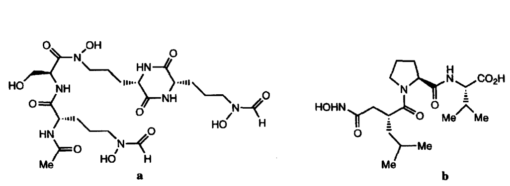
Figure 3. (a) Foroxymithine 和 (b) propioxatin A 的结构式
1.3.2 合成方法
肽羟肟酸的固相合成策略主要有以下几种：
方法一：从 HMBA 树脂出发。先在 HMBA 连接臂上合成完整肽链，然后用羟胺（hydroxylamine, NH₂OH）溶液进行亲核切割，一步获得肽羟肟酸。这种方法简单直接，但需要保证肽链中不存在对羟胺敏感的保护基或修饰。
方法二：Matlystatin B 的合成——琥珀酰亚胺酯策略（Figure 5）。将肽链的C端先活化为 N-羟基琥珀酰亚胺酯（N-hydroxysuccinimide ester, OSu ester），然后在溶液中与羟胺反应生成羟肟酸。这种方法适用于从 HMBA 树脂上切割后再进行液相修饰。
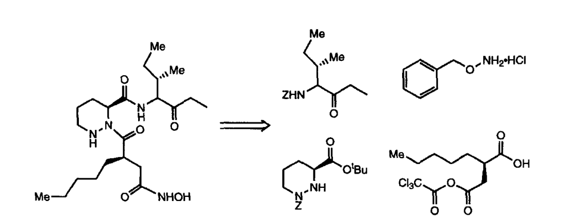
Figure 4. Matlystatin B 的逆合成分析
Figure 5. 从琥珀酰亚胺酯（succinimide ester）生成肽羟肟酸
方法三：直接使用羟胺连接臂。设计含有羟胺基团的专用连接臂（resin-bound hydroxylamine），肽链合成后直接从连接臂上切割释放出羟肟酸。Figure 7 展示了树脂结合羟胺的生成策略，Figure 9 则展示了N-Fmoc-氨氧基-2-氯三苯基树脂的具体合成路线。
Figure 6. Tepoxalin 的固相合成路线
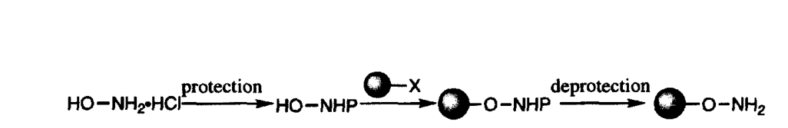
Figure 7. 树脂结合羟胺（resin-bound hydroxylamine）的生成策略
方法四：N-羟基邻苯二甲酰亚胺酯法（Figure 8）。利用 N-羟基邻苯二甲酰亚胺（N-hydroxyphthalimide）作为羟胺的来源。首先通过两种途径合成树脂结合的 N-羟基邻苯二甲酰亚胺酯：(a) 通过亲核取代 mesylate 或 chloride；(b) 通过磷鎓盐（phosphonium salt）介导的偶联。然后脱除邻苯二甲酰基保护，暴露出羟胺基团，进行肽链合成。
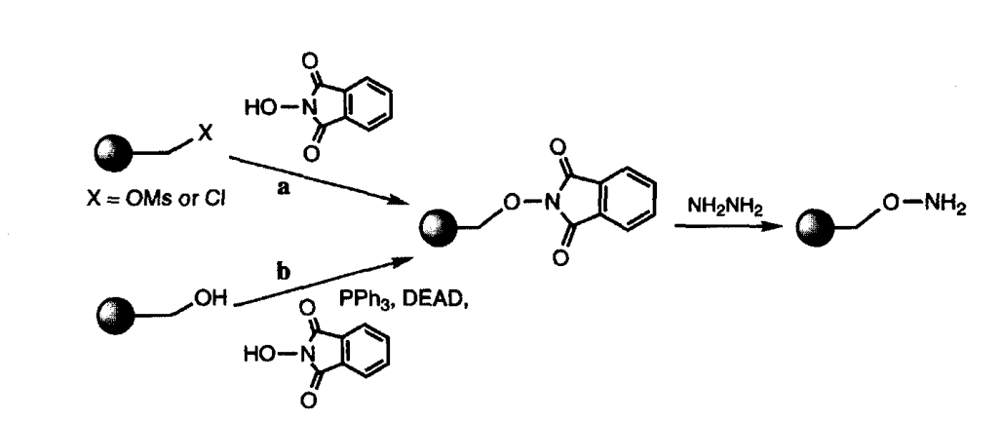
Figure 8. 树脂结合 N-羟基邻苯二甲酰亚胺酯的合成：(a) 通过取代 mesylate 或 chloride；(b) 通过磷鎓盐
N-Fmoc-氨氧基-2-氯三苯基树脂（Figure 9）是一种精心设计的专用树脂，结合了 2-chlorotrityl chloride 树脂的酸敏性和氨氧基（aminooxy）的多功能性。肽链合成后，用温和的酸条件切割，获得C端羟肟酸。该树脂还可以用于合成 aminooxy 肽，后者可与醛基化合物发生肟键连接（oxime ligation），在化学生物学中有广泛应用。
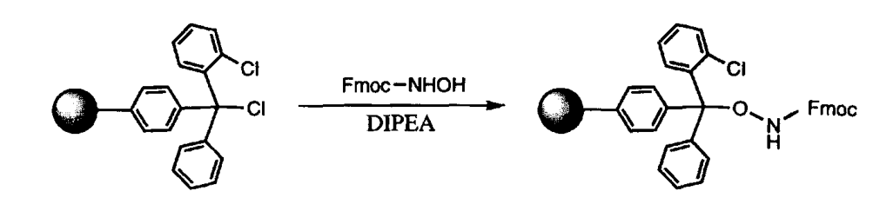
Figure 9. N-Fmoc-氨氧基-2-氯三苯基聚苯乙烯树脂的合成
Protocol 8: N-Fmoc-氨氧基-2-氯三苯基树脂的合成和使用
树脂合成：
1. 将 2-chlorotrityl chloride 树脂用 DCM 溶胀。
2. 加入 N-Fmoc-aminooxy acetic acid（3 eq.）和 DIPEA（6 eq.）的 DCM 溶液。
3. 室温反应 1 h，用 DCM (×3)、DMF (×3) 洗涤。
4. 用 MeOH 封闭未反应的 trityl chloride（MeOH/DIPEA/DCM, 10 min）。
肽合成与切割：
5. 用 20% piperidine/DMF 脱除 Fmoc（5 min + 15 min）。
6. 按 Fmoc SPPS 标准流程合成肽链。
7. 注意：使用 HOAt/HATU 介导的酰化反应来提高偶联效率。
8. 用 AcOH/TFE/DCM (1:2:7) 切割（温和酸条件，保留侧链保护基），获得肽羟肟酸。
1.4 肽醛（Peptide Aldehydes）（页153–168）
1.4.1 重要性与挑战
肽醛（peptide aldehyde, –CHO）是一类重要的蛋白酶抑制剂。醛基能够与丝氨酸蛋白酶（serine proteases）活性中心的丝氨酸羟基形成可逆的半缩醛（hemiacetal），或与半胱氨酸蛋白酶（cysteine proteases）的巯基形成半硫缩醛（thiohemiacetal），从而抑制酶活性。著名的例子包括：
Leupeptin (Ac-Leu-Leu-Arg-H)——广泛使用的胰蛋白酶和钙蛋白酶抑制剂
Calpain inhibitors——用于研究神经退行性疾病
Proteasome inhibitors——如 MG-132 等
肽醛合成的核心挑战在于：醛基在 SPPS 条件下极不稳定——碱性条件（piperidine 脱保护）、强酸（TFA 切割）、还原剂（NaBH₄）等都会破坏醛基。因此，不能直接在固相上暴露游离醛基，而必须使用"前体"策略（precursor strategy）：在固相合成阶段将醛基以稳定的前体形式保护，合成完成后再转化为醛。
1.4.2 Weinreb 酰胺连接臂策略
Weinreb 酰胺（N-methyl-N-methoxyamide, –CON(Me)(OMe)）是一种特殊的酰胺，用 LiAlH₄ 或 DIBAL-H 还原时只能停留在醛阶段，不会过度还原为醇。这一特性使其成为合成肽醛的理想前体。
在固相合成中（Figure 10），首先将 Weinreb 酰胺连接臂接到树脂上，然后按标准 Fmoc SPPS 合成肽链。肽链组装完成后：
从树脂上切割下肽-Weinreb 酰胺（用 TFA 或 HF 切割，取决于树脂类型）
在溶液中用 DIBAL-H 或 LiAlH₄ 在低温（−78°C）下还原 Weinreb 酰胺
反应精确停止在醛阶段，产物为肽醛
这一方法的成功实例包括 Boc-Phe-Val-Ala-H 等肽醛的合成。需要注意的是，Weinreb 酰胺的还原步骤必须在无水、低温条件下进行，以避免副反应。
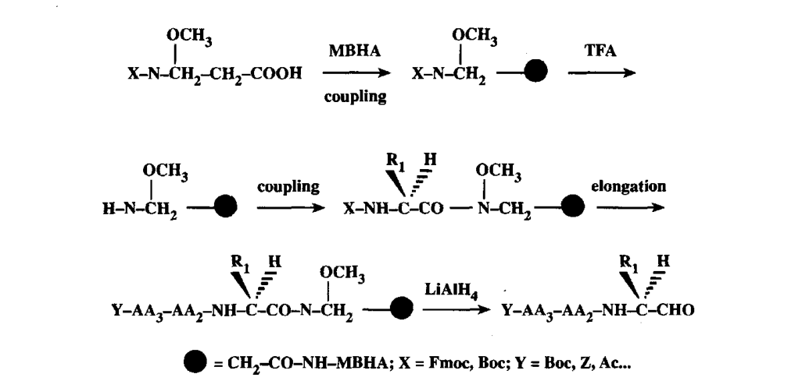
Figure 10. 通过 Weinreb 酰胺连接臂合成肽醛
1.4.3 苯酯连接臂策略
Zlatoidsky 提出了基于苯酯（phenyl ester）的连接臂策略（Figure 11）。肽链通过苯酯连接臂固定在树脂上。合成完成后，用温和的还原剂（如 NaBH₄ 或 LiBH₄）将苯酯还原为醛。这种方法的优势在于还原条件相对温和，但需要精确控制还原剂的用量和反应时间，以避免过度还原为醇。
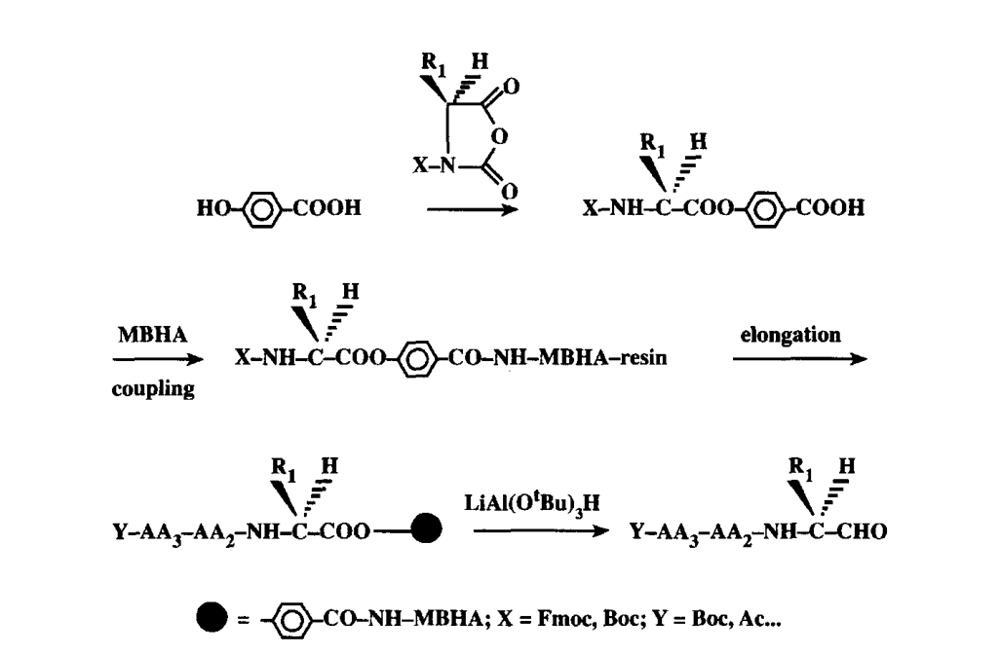
Figure 11. 通过苯酯连接臂合成肽醛
1.4.4 臭氧化法策略
臭氧化（ozonolysis）策略（Figure 12）使用含有烯烃（alkene）的连接臂。肽链合成完成后，将连接臂上的烯烃进行臭氧化反应（O₃），生成臭氧中间体，再经还原性后处理（如 Me₂S 或 PPh₃）断裂为醛。这种方法的化学选择性很高——臭氧只与烯烃反应，不影响肽链中的其他官能团（如 Trp、Met 等敏感残基需要特殊注意）。
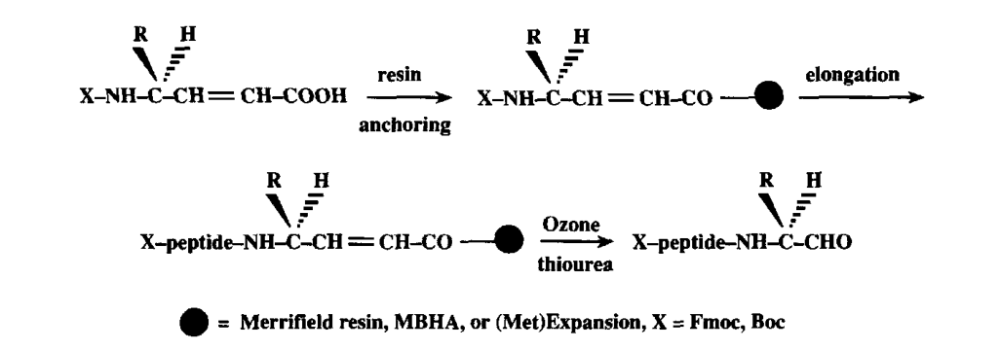
Figure 12. 通过连接臂臭氧化（ozonolysis）合成肽醛
Protocol 10: Boc-氨基酸醛的制备（Weinreb 酰胺法）
1. 将 Boc-氨基酸 N,N-甲基甲氧基酰胺（Boc-AA-N(OMe)Me, 23.3 mmol）放入干燥圆底烧瓶。
2. 加入无水 THF (100 ml)，冰浴冷却至 0°C。
3. 分批加入 LiAlH₄ (1.10 g, 29 mmol)，注意控制气体释放。
4. 40 min 后用 TLC 检测反应进程。如原料剩余，补加 LiAlH₄。
5. 在旋转蒸发仪上去除 THF。
6. 用 EtOAc 萃取，无水 Na₂SO₄ 干燥，浓缩。
7. 粗产物用硅胶柱色谱纯化（hexane/EtOAc 梯度洗脱）。
8. 产物为 Boc-氨基酸醛，−20°C 保存备用。
注意：LiAlH₄ 极易吸潮，所有操作须在无水条件下进行。
1.4.5 Leupeptin 的合成实例
Leupeptin (Ac-Leu-Leu-Arg-H) 是一种经典的天然肽醛蛋白酶抑制剂。其合成（Figure 13）综合运用了上述策略：
C端精氨酸醛（Arg-H）通过 Weinreb 酰胺前体引入：先合成 Arg(weinreb amide) 片段
按固相合成组装 Leu-Leu-Arg 片段
N端乙酰化（Ac₂O/DIPEA）
从树脂切割后，用 DIBAL-H 还原 Weinreb 酰胺为醛
Leupeptin 的合成展示了肽醛合成的完整工作流程，是多肽合成教学中的经典案例。
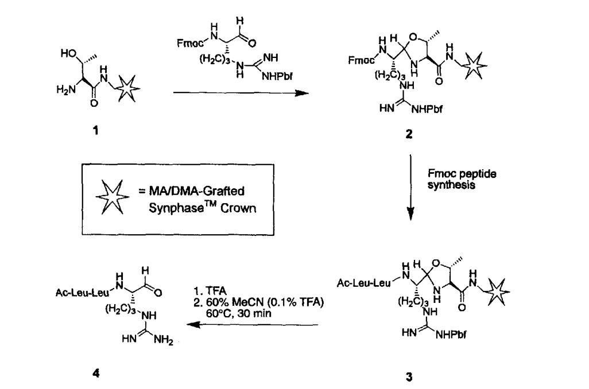
Figure 13. Leupeptin (Ac-Leu-Leu-Arg-H) 的合成
1.4.6 肽醛的稳定性问题
肽醛在水溶液中存在三种形式之间的动态平衡（Figure 14）：
(A) 游离醛形式（free aldehyde）——具有生物活性形式
(B) 水合物形式（hydrated form, gem-diol）——醛基与水分子加成形成 1,1-二醇
(C) 环状半缩胺形式（cyclic aminol / hemiaminal）——当肽的N端为游离胺时，N端氨基与C端醛基分子内环化
这一平衡对于肽醛的储存、分析和生物活性评估都有重要影响。例如，在 HPLC 分析中可能观察到多个峰（对应不同形式），在生物活性实验中，实际有效的游离醛浓度可能低于总浓度。因此，肽醛类化合物通常需要新鲜制备，并在低温、中性 pH 条件下保存。
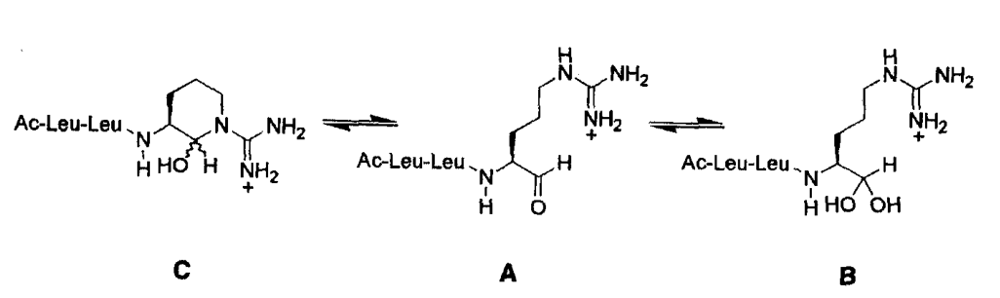
Figure 14. 肽醛 (A)、水合物 (B) 和环状半缩胺 (C) 在水溶液中的平衡
1.5 肽酰肼和酰基肼（Peptidyl Hydrazides and Acyl Hydrazides）（页168–170）
肽酰肼（peptidyl hydrazide, –CONHNH₂）可通过 HMBA 树脂用肼（NH₂NH₂）亲核切割一步获得。肽酰肼在现代多肽化学中具有重要地位：
化学选择性连接（chemoselective ligation）：酰肼可在弱酸条件下被亚硝酸钠（NaNO₂）氧化为酰基叠氮（acyl azide），然后与另一肽段的N端半胱氨酸发生酰肼-叠氮连接（hydrazide-azide ligation），实现片段缩合。
天然蛋白质化学合成：Liu 等发展的酰肼连接方法已成为蛋白质全合成的重要工具。
药物递送：酰肼键在酸性环境下可水解，被用于 pH 响应型药物释放系统。
在 HMBA 树脂上合成肽链后，用无水肼/DMF 溶液处理（室温, 2 h），即可获得肽酰肼。切割条件极其温和，侧链保护基不受影响。如果需要脱保护，可后续用 TFA 处理。
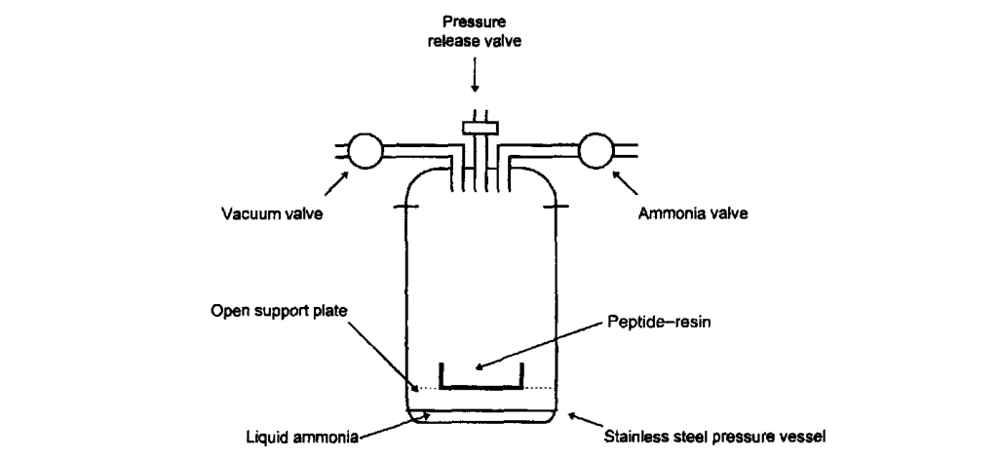
Figure 2. 压力容器装置图（用于液氨切割）
Figure 2 展示了用于液氨（NH₃(l)）切割的压力容器装置。这种方法用于从树脂上通过氨解释放肽酰胺。干冰用于冷凝氨气为液态，反应在密封的不锈钢压力容器中进行。聚苯乙烯树脂需要先用有机溶剂（如 DMF 或 THF）润湿，然后放入压力容器中与液氨反应。
2. N端修饰（N-Terminal Modifications）（页170–173）
肽链N端的 α-氨基是一个天然的修饰位点。由于其亲核性（nucleophilicity），可以与多种活性酯、醛、异硫氰酸酯等试剂反应，引入各种功能基团。N端修饰可以在肽链合成过程中（on-resin）或切割后（in solution）进行。
2.1 生物素化（Biotinylation）
生物素（biotin, 维生素B₇）与链霉亲和素（streptavidin）/ 亲和素（avidin）之间具有极高的结合亲和力（Kd ≈ 10⁻¹⁵ M），是生物学研究中最常用的标记系统之一。肽链的生物素化可实现以下应用：
肽的亲和纯化（affinity purification）——利用 streptavidin beads 捕获
表面等离子体共振（SPR）分析——将肽固定在 streptavidin 传感器芯片上
细胞摄取研究——荧光标记 + 生物素双重标记
蛋白酶活性检测——生物素标记的肽底物用于酶活性分析
常用生物素化试剂：
生物素-NHS 酯（Biotin-NHS ester）：与N端氨基反应形成稳定酰胺键。反应条件温和（pH 7–8 磷酸缓冲液），但可能同时标记 Lys 侧链。
生物素-PEG-NHS 酯：在生物素和 NHS 酯之间引入 PEG 连接臂（spacer），减少空间位阻，提高检测灵敏度。
生物素-PEG-马来酰亚胺（biotin-PEG-maleimide）：用于选择性标记 Cys 侧链。
在 SPPS 中，生物素化通常在肽链合成的最后一步进行：脱除N端 Fmoc 后，用生物素-NHS 酯（或预活化的生物素）在固相上反应，然后进行 TFA 切割和侧链脱保护。也可以在切割后，在溶液中进行生物素化。
2.2 还原烷基化（Reductive Alkylation）
N端还原烷基化是将N端氨基转化为仲胺或叔胺的方法。反应原理：
肽-NH₂ + R-CHO → 肽-N=CHR（亚胺/imine, Schiff base） 肽-N=CHR + NaBH₃CN → 肽-NHCHR（仲胺, secondary amine）
使用 NaBH₃CN（氰基硼氢化钠）作为还原剂，因为它在弱酸性条件（pH 6–7）下稳定，选择性地还原亚胺而不还原醛基。通过控制醛的用量和反应条件，可以实现单烷基化或双烷基化。这一方法也可用于 Lys 侧链（ε-amino group）的修饰。
3. 侧链修饰策略（Side-Chain Modification Strategies）（页173–182）
侧链修饰是多肽化学中最具挑战性也最具创造性的领域。在 Fmoc SPPS 中，氨基酸侧链的活性官能团（如 -NH₂, -COOH, -SH, -OH 等）通常被保护基保护。要在合成完成后对特定侧链进行选择性修饰，需要使用正交保护基（orthogonal protecting groups）策略。
正交保护基的核心原则：各保护基的脱除条件互不干扰，可以在其他保护基存在下选择性脱除某一个（或一组）保护基，从而暴露特定的侧链官能团进行修饰。
3.1 赖氨酸（Lys）的侧链修饰
Lys 的 ε-氨基是多肽修饰最常见的位点之一。在标准 Fmoc SPPS 中，Lys 的侧链通常用 Boc 保护（与 Fmoc 正交）。但有时需要更精细的正交保护：
Alloc（allyloxycarbonyl, 烯丙氧羰基）：用 Pd(0) 催化脱保护（Pd(PPh₃)₄ + PhSiH₃），条件温和，与 Boc 和 Fmoc 完全正交。
Dde（1-(4,4-dimethyl-2,6-dioxocyclohexylidene)ethyl）：用 2% 肼/DMF 脱保护（v/v, 2 × 3 min），极快且选择性高。
Mtt（4-methyltrityl, 4-甲基三苯甲基）：用极低浓度的 TFA（1% TFA/DCM）脱保护，远低于 Boc 的脱保护条件（50% TFA）。
应用实例：使用 Alloc 保护的 Lys 可以在肽链合成过程中选择性地脱保护并修饰。例如，合成支化肽（branched peptide）时，在特定 Lys 残基上构建第二条肽链；合成环肽（cyclic peptide）时，通过两个 Lys 侧链的分子内交联形成大环。生物素化肽（biotinylated peptide）的合成也常利用 Lys 侧链的选择性标记。
3.2 半胱氨酸（Cys）的侧链修饰
Cys 的巯基（thiol, -SH）是另一个重要的修饰位点，尤其在二硫键（disulfide bond）形成和硫醚键（thioether）构建中：
Acm（acetamidomethyl, 乙酰氨基甲基）：用 Hg(OAc)₂ 或 Ag⁺ 脱保护后氧化形成二硫键。与 Fmoc/Boc 策略完全兼容。
StBu（tert-butylthio, 叔丁硫基）：用还原剂（如 TCEP 或 DTT）脱保护。
Mmt（methoxytrityl, 甲氧基三苯甲基）：用极低浓度 TFA 脱保护，类似 Mtt。
Trt（trityl, 三苯甲基）：用稀释 TFA（~5%）脱保护。是 Fmoc SPPS 中 Cys 最常用的保护基。
Cys 的正交保护策略使得多对二硫键可以按特定顺序形成（regioselective disulfide bond formation），这在合成含有复杂二硫键网络的肽毒素（如 conotoxins、defensins）时至关重要。
3.3 天冬氨酸/谷氨酸（Asp/Glu）的侧链修饰
Asp 和 Glu 的侧链羧基可以用 OAll（allyl ester, 烯丙基酯）保护，用 Pd(0) 催化脱保护（与 Alloc 正交条件类似但需要不同催化剂体系）。脱保护后，侧链羧基可以用于：
形成侧链环（side-chain to side-chain cyclization）——如环肽类药物
连接荧光标记或其他报告基团
构建分支肽结构
3.4 正交保护基策略总结
| 氨基酸 | 保护基 | 脱保护条件 | 应用 |
|---|---|---|---|
| Lys | Boc | 50% TFA/DCM | 标准保护 |
| Lys | Alloc | Pd(PPh₃)₄/PhSiH₃ | 正交选择性修饰 |
| Lys | Dde | 2% 肼/DMF | 快速正交脱保护 |
| Lys | Mtt | 1% TFA/DCM | 超温和脱保护 |
| Cys | Trt | ~5% TFA/DCM | 标准保护 |
| Cys | Acm | Hg(OAc)₂ 或 Ag⁺ | 二硫键正交形成 |
| Cys | StBu | TCEP/DTT | 还原脱保护 |
| Asp/Glu | OtBu | TFA | 标准保护 |
| Asp/Glu | OAll | Pd(0) 催化 | 侧链环化 |
Protocol: 正交脱保护和侧链修饰操作（以 Lys(Alloc) 为例）
1. 完成含 Lys(Alloc) 的肽链固相合成（保留 N端 Fmoc 或已脱除，视设计而定）。
2. Lys(Alloc) 脱保护：
a. 用干燥 DCM 洗涤树脂 (×3)。
b. 加入 Pd(PPh₃)₄ (0.2 eq.) 和 PhSiH₃ (20 eq.) 的干燥 DCM 溶液。
c. 氩气保护下室温反应 30 min × 2 次。
d. 用 DCM (×3)、DMF (×3) 充分洗涤。
e. 用 0.06 M EDTA/DMF 洗涤以去除残留钯（×3）。
3. 侧链修饰：
a. 在脱保护的 Lys ε-NH₂ 上引入所需修饰基团
（如生物素-NHS、荧光标签-NHS、烷基化等）。
b. 反应用 DMF 或 NMP 作溶剂，DIPEA 作碱，室温 1–2 h。
4. 继续后续合成步骤或进行最终 TFA 切割。
本章要点总结
• 肽N-烷基酰胺（1.1）：通过氨解/胺解树脂酯或树脂结合胺策略合成。Sieber酰胺树脂仅需1% TFA切割，是制备side-chain protected peptide amide的首选。
• HMBA连接臂（1.2）：酸稳定、亲核切割。一树脂多产物策略——同一条肽树脂用不同亲核试剂切割，获得C端酰胺、酯、酰肼、羟肟酸等多种修饰产物。
• 肽羟肟酸（1.3）：金属蛋白酶抑制剂的关键药效团。可从HMBA树脂用羟胺切割、使用专用羟胺树脂、或通过N-羟基邻苯二甲酰亚胺酯法合成。
• 肽醛（1.4）：蛋白酶抑制剂。醛基在SPPS条件下不稳定，需用前体策略——Weinreb酰胺（LiAlH₄/DIBAL还原）、苯酯（还原切割）、臭氧化（烯烃氧化断裂）。
• 肽醛平衡（1.4.6）：水溶液中存在醛-水合物-环状半缩胺三种形式间的动态平衡，影响储存、分析和生物活性评估。
• 肽酰肼（1.5）：HMBA树脂用肼切割获得。用于化学选择性连接和蛋白质全合成。
• N端修饰（2）：生物素化（Biotin-NHS ester法）和还原烷基化（醛+NaBH₃CN法）是最常用的N端修饰方法。
• 侧链修饰（3）：正交保护基策略是关键——Lys (Alloc/Dde/Mtt)、Cys (Acm/StBu/Mmt)、Asp/Glu (OAll)等可实现选择性脱保护和修饰。
• Pd(0)催化的Alloc/OAll脱保护与Fmoc/Boc体系完全正交，是侧链修饰的核心工具。
• 修饰肽合成是多肽药物开发的核心技术——掌握这些策略才能高效构建复杂多肽分子库。